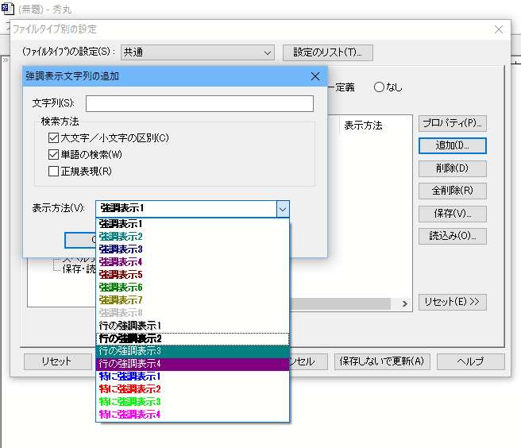

[HME0093A]
●強調表示で、色やスタイルを設定する方法

- 秀丸エディタの強調表示機能の使い方がよく分かりません。「その他」-「ファイルタイプ別の設定」ダイアログの「デザイン」−「強調表示」で、具体的な色やスタイルが設定できないようですが？

-
秀丸エディタではデフォルトで強調表示する単語や正規表現パターンの例として、Ｃ言語やVisual Basic、秀丸マクロファイルの設定を用意しており、これらは「強調表示」タブ中の「読み込み...」から、設定ファイル（拡張子が.hilight）を読み込んで使うことができます。
また、これ以外に強調表示したい単語や正規表現パターンを追加することができます。「追加...」ボタンをクリックして、(検索)文字列、検索方法、表示方法を設定します。
検索方法で「正規表現」を選択すると、検索文字列に正規表現パターンを記述することができます。
その「表示方法」で実際に表示される色やスタイルは、「その他」-「ファイルタイプ別の設定」ダイアログの「デザイン」で設定されている内容が使用されます。
「デザイン」で色やスタイルを設定し、「強調表示」で検索にマッチした箇所の(デザインで設定した)表示方法を設定します。

表示方法自体の優先順位は、「デザイン」−「場所の一覧」で表示される順位であらかじめ決まっており変更できませんので、設定したい優先順位に合った表示方法を選択します。